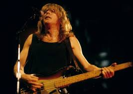
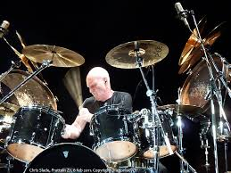
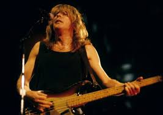
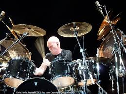
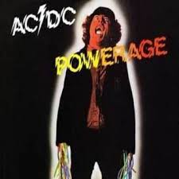
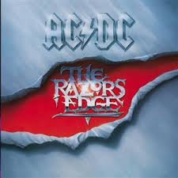
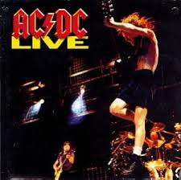
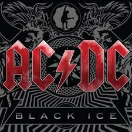

Integrantes:
| Foto | Nome | Instrumentos |
|---|---|---|
 |
Angus Young | Guitar |
| Brian Johnson | Vocals | |
|  | Cliff Williams | Bass |
| Malcolm Young | Guitar | |
| Bon Scott | Vocals | |
| Stevie Young | Guitar | |
|  | Chris Slade | Drums |
AC/DC é uma banda de rock formada em Sydney, Austrália em 1973, pelos irmãos Malcolm e Angus Young, sendo considerada umas das maiores e mais bem sucedidas bandas de rock de todos os tempos.[1] O estilo musical da banda é normalmente classificado como hard rock ou blues rock, mas seus membros sempre classificaram a sua música simplesmente como "rock and roll".
| Foto | Nome | Instrumentos |
|---|---|---|
|
Angus Young | Guitar |
| Brian Johnson | Vocals | |
|  | Cliff Williams | Bass |
| Malcolm Young | Guitar | |
| Bon Scott | Vocals | |
| Stevie Young | Guitar | |
|  | Chris Slade | Drums |
| Capa | Nome | Ano de Lançamento |
|---|---|---|
|  | Powerage | 1978 |
 |
Back in Black | 1980 |
|  | The Razors Edge | 1990 |
|  | Live | 1992 |
|  | Black Ice | 2008 |